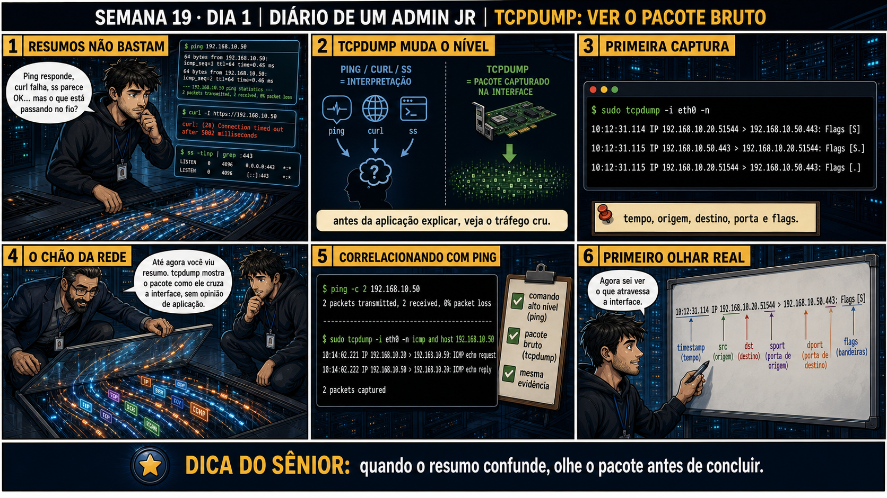

Semana 19 · Dia 1 | Nível Júnior — Redes
tcpdump: Primeira Captura
ver o pacote de verdade substitui qualquer suposição sobre o que está passando pela rede
ANTES DE ALTERAR, OBSERVE. DEPOIS DE ALTERAR, VALIDE.
1. O chamado
#1901
PRIORIDADE MÉDIA
10:20
aberto por: desenvolvedor da equipe de backend
host: srv-app-05 · serviço: API de pedidos
"Não sei se o servidor está realmente recebendo as requisições ou não — quero PROVA, não achismo."
O plantão é seu. O que você digita primeiro?
💡 Passa o mouse nas palavras destacadas pra ver uma dica rápida — clica se quiser a explicação completa com analogia.
2. Antes de ver as opções — tenta responder
🧠 Recall ativo: por que rodar tcpdump sem especificar nenhuma interface pode te dar uma visão
incompleta ou confusa do tráfego que você está tentando investigar?
Uma máquina pode ter várias
interfaces de rede
ao mesmo tempo (eth0, wg0, lo, docker0...). Sem especificar qual delas com -i, o tcpdump usa um
comportamento padrão que pode não ser a interface onde o tráfego que te interessa realmente passa — você
pode ficar olhando pra interface errada e concluir, errado, que "não está chegando nada".
3. Questão comentada — clica numa alternativa
Você quer confirmar se requisições estão chegando na interface eth0 de um
servidor, mostrando os pacotes em tempo real no terminal. Qual comando faz exatamente isso?
💡 Analogia do Sênior para Fixar: O princípio fundamental de 01 TCPDUMP PRIMEIRA CAPTURA é como o alicerce de sustentação de um viaduto: garante que a estrutura de comunicação suporte alto tráfego sem colapsar.
4. Decodificador de conceitos
Clica em qualquer termo pra ver a definição completa e uma analogia do dia a dia:
5. Ferramentas e leitura da evidência
| Comando | O que faz |
|---|---|
ip a | Lista as interfaces de rede disponíveis, pra saber qual usar com -i. |
tcpdump -i eth0 | Captura e exibe pacotes em tempo real na interface eth0. |
tcpdump -D | Lista todas as interfaces que o tcpdump consegue capturar. |
$ ip a 2: eth0: <BROADCAST,MULTICAST,UP,LOWER_UP> ... 3: wg0: <POINTOPOINT,NOARP,UP,LOWER_UP> ... $ sudo tcpdump -i eth0 tcpdump: verbose output suppressed, use -v for full protocol decode listening on eth0, link-type EN10MB (Ethernet), snapshot length 262144 bytes 14:32:01.221033 IP 10.10.10.50.443 > 10.10.10.20.51422: Flags [P.], seq 1:87, ack 1, win 502, length 86 14:32:01.221190 IP 10.10.10.20.51422 > 10.10.10.50.443: Flags [.], ack 87, win 501, length 0 ^C 2 packets captured 2 packets received by filter 0 packets dropped by kernel
5.1 O painel 3 da prancha de hoje mostra o técnico rodando tcpdump sem sudo e recebendo um erro de permissão
Um colega executa tcpdump -i eth0 como usuário comum e recebe "You don't have permission to capture on that device".
Por que capturar pacotes de rede normalmente exige privilégio elevado (sudo ou
root), diferente de vários outros comandos de diagnóstico de rede?
💡 Analogia do Sênior para Fixar: Diagnosticar anomalias em 01 TCPDUMP PRIMEIRA CAPTURA é como o eletricista usando o multímetro no quadro de disjuntores: mede a passagem de sinal no ponto exato da falha.
5.2 "Por que a captura nunca para sozinha?"
Um colega roda tcpdump -i eth0 numa VM com bastante tráfego e vê o terminal encher de linhas continuamente, sem parar.
Por que o tcpdump continua capturando indefinidamente até você interromper
manualmente, em vez de parar sozinho depois de um tempo?
💡 Analogia do Sênior para Fixar: Aplicar as boas práticas de 01 TCPDUMP PRIMEIRA CAPTURA é como o protocolo de segurança da aviação: elimina pontos únicos de falha e garante previsibilidade operacional.
6. Procedimento profissional
- Confirme qual interface é relevante pro tráfego investigado com ip a.
- Rode tcpdump -i <interface> com sudo, já que captura de pacotes exige privilégio elevado.
- Observe as primeiras linhas: timestamp, IPs de origem e destino, portas, flags.
- Interrompa com Ctrl+C quando já tiver visto o suficiente pra confirmar (ou descartar) a hipótese.
- Leia o resumo final (packets captured / received by filter / dropped) pra confirmar que nada foi perdido.
7. Laboratório guiado — marca conforme for testando
Segurança: execute os testes apenas em VM descartável e confirme nomes de discos, hosts e arquivos antes de cada comando.
- Rode ip a numa VM de laboratório e identifique o nome da interface principal.$ ip aResultado esperado: nome da interface (ex.: eth0, ens18) confirmado.
Se o seu resultado foi diferente
Não aparece nenhuma interface chamada eth0, só ens18, enp0s3 ou algo parecido → normal — o nome da interface varia por hypervisor (Proxmox costuma dar ens18, VirtualBox costuma dar enp0s3). Use o nome real que apareceu noip ano lugar deeth0em todos os comandos seguintes da aula. - Rode tcpdump -i <interface> sem sudo e observe o erro de permissão.$ tcpdump -i eth0Resultado esperado: mensagem de permissão negada.🧑🏫 Aqui entra o Mentor (em breve): se a mensagem de erro parecer confusa, este é o ponto onde o chat com o Sênior-IA vai explicar exatamente o que ela significa.
- Rode o mesmo comando com sudo e com -n (sem resolver nomes), e em outro terminal gere tráfego (ping, curl, ou navegação simples).$ sudo tcpdump -i eth0 -n # em outro terminal, ao mesmo tempo: $ ping -c 5 8.8.8.8
🔍 Detalhar esse comando
- sudo
- Necessário porque capturar pacotes brutos numa interface exige privilégio elevado — o kernel protege essa visibilidade sobre todo o tráfego, não só o seu.
- tcpdump
- O programa que captura e traduz pacotes de rede pra uma linha legível por vez.
- -i eth0
- Escolhe em qual interface capturar — sem isso, o tcpdump usa um comportamento padrão que pode não ser a interface certa.
- -n
- Não resolve nomes (nem de host via DNS reverso, nem de porta via /etc/services) — mostra os números crus (IP e porta). Mais rápido e evita que o próprio tcpdump gere tráfego DNS extra enquanto você investiga.
Resultado esperado: pacotes aparecendo em tempo real correspondentes ao tráfego gerado.Se o seu resultado foi diferente
"tcpdump: eth0: No such device exists" → confirme o nome exato da interface comip a(passo anterior) e substituaeth0pelo nome real antes de rodar de novo.
Nenhum pacote aparece mesmo com o ping rodando no outro terminal → confira se os dois terminais estão na MESMA VM — capturar numa VM enquanto o ping roda em outra não mostra nada, porque o tráfego não passa pela interface que você está observando. - Interrompa a captura com Ctrl+C e leia o resumo final de pacotes.^C 5 packets captured 5 packets received by filter 0 packets dropped by kernelResultado esperado: contagem de packets captured / received by filter / dropped.
8. Validação e encerramento
- Você identificou a interface certa antes de capturar, com ip a.
- Você entende por que captura de pacotes exige sudo.
- Você conseguiu ler timestamp, IPs, portas e flags numa linha de saída do tcpdump.
- Você sabe que a captura continua até ser interrompida manualmente.
Rollback e limites
Rodar tcpdump é uma operação de observação pura — não altera nada na rede nem no
sistema. O cuidado real está em ambiente de produção com muito tráfego: uma captura sem filtro pode gerar um
volume enorme de dados rapidamente, dificultando encontrar o que interessa. Isso é resolvido amanhã, com
filtros de host e porta.
💡 Sobre repetição espaçada: "ver o pacote de verdade substitui qualquer
suposição" é o mesmo princípio de "ANTES DE ALTERAR, OBSERVE" que atravessa todo o curso — só que agora com a
ferramenta mais direta possível pra isso. O Anki vai reforçar essa conexão.
9. Resposta final
Alternativa correta: A. Nesta aula, o comando certo pra provar se o
tráfego chega na interface foi tcpdump -i eth0. O ponto central do caso é este: ver o pacote de verdade
substitui qualquer suposição sobre o que está passando pela rede.
🔓 O que você desbloqueou hoje
Capacidade de capturar tráfego de rede em tempo real e ler as primeiras
informações de cada pacote. Amanhã você aprende a filtrar essa captura por host e porta específicos, pra não
se afogar em tráfego irrelevante.